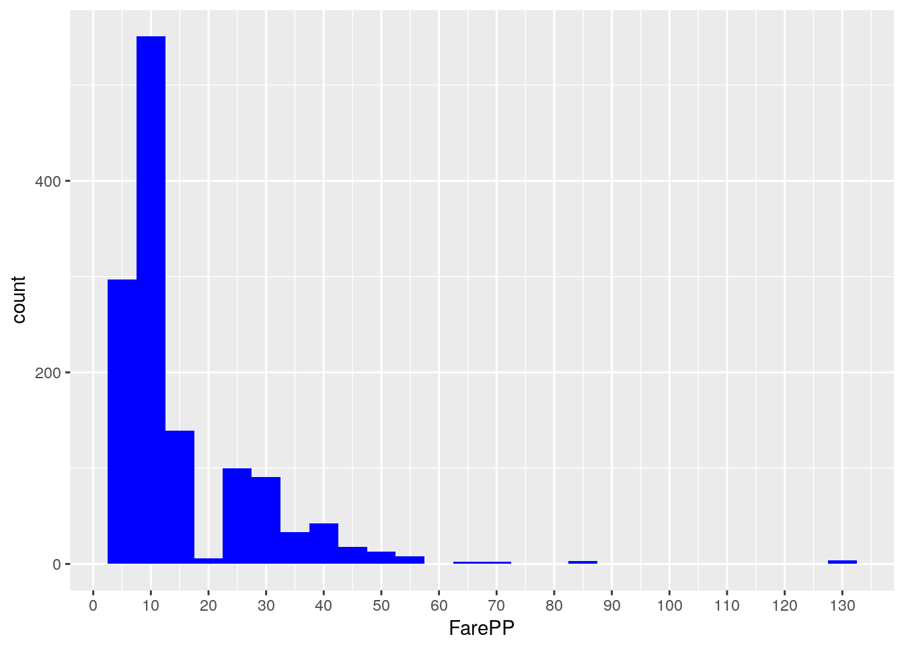
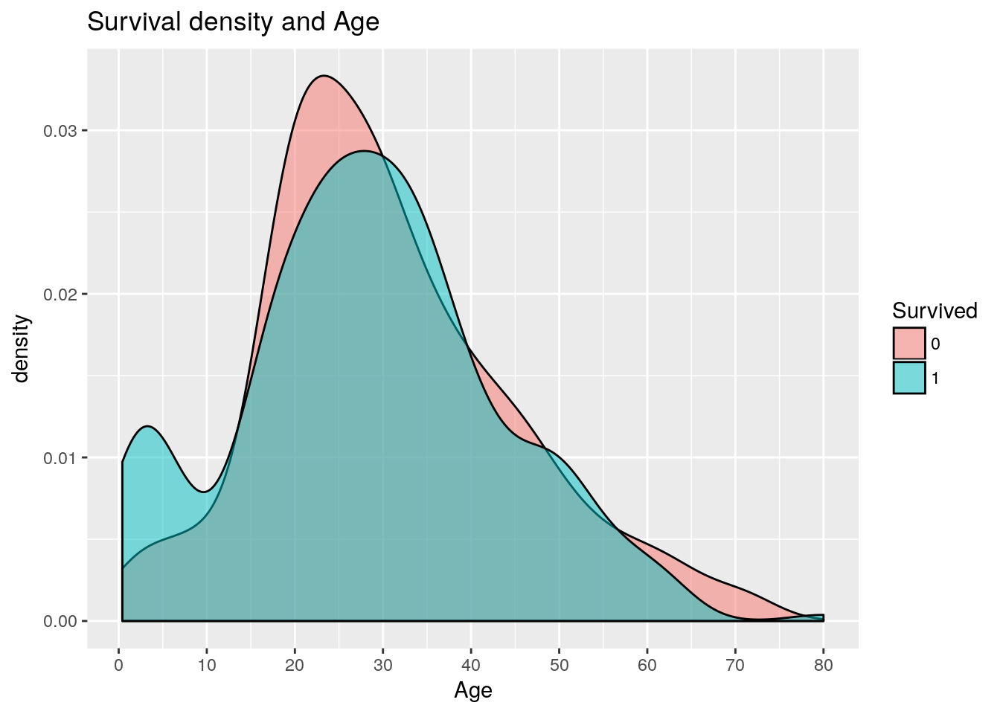
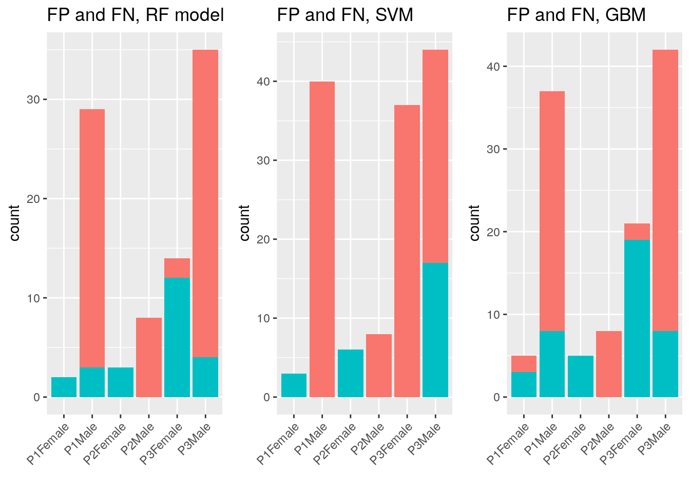

Finding the ‘real’ families on the Titanic, and majority vote ensemble
Erik Bruin
- 1 Executive Summary
- 2 Introduction
- 3 Loading and Exploring Data
- 4 Feature engineering
- 4.1 Creating the Title variable
- 4.2 Finding groups of people traveling together
- 4.2.1 Families; siblings, spouses, parents and children
- 4.2.2 Family Size inconsistencies, and correcting the effects of a cancellation
- 4.2.3 Families; what about uncles, aunts, cousins, nieces, grandparents, brothers/sisters-in law?
- 4.2.4 Can we still find more second degree families?
- 4.2.5 Did people book together?
- 4.3 Dealing with the Fare variable
- 4.4 Predicting missing Age values
- 4.5 What to do with Cabin?
- 4.6 How to deal with Children in the model?
- 4.7 What does Embarked tell us?
- 4.8 Ticket survivors
- 4.9 Adding an “Is Solo” variable" based on Siblings and Spouse (SibSp) only
- 5 Predictions (with caret cross validation)
1 Executive Summary
This project is my first attempt to compete in a Kaggle Machine Learning competition in which we have to predict who survived the Titanic disaster. I enjoyed it very much and learned a lot. Key findings were:
- My key to success was to dive deep into groups of people that traveled together. My grouping variable is different when compared to other kernels that I have looked at.
- The main things that I have done that I have not seen in any other kernels yet is the grouping of ‘second degree’ family members. Uncles, grandparents, cousins, and brothers/sisters-in-law can actually be found in the data.
- My public score on Kaggle is 0.81818. As this is a top4% score, I am pretty pleased with the result.
- I am just using 5 predictors. A significant difference with most kernels is that I eventually got rid of the Title variable. I believe that the models are much cleaner model now as the Title variance double counts the Sex/Gender variance (and also male children (called Masters)).
- My analysis includes three models: a Random Forest model, a Support Vector Machine (SVM) model, and a Gradient Boosting Machine (GBM) model.
- I included three frameworks that combine models.
- The first one is a simple voting ensemble that takes the majority vote of 3 models.
- The second framework is similar. It takes the predictions from one model (the best model), and only changes the prediction if both other models disagree with that best model.
- The third thing that I tried is selectively using models for specific categories.
- The best results were achieved by using the SVM model for 1st and 2nd class passengers, and use the GBM model for 3rd class passengers.
2 Introduction
Kaggle describes this competition as follows:
The sinking of the RMS Titanic is one of the most infamous shipwrecks in history. On April 15, 1912, during her maiden voyage, the Titanic sank after colliding with an iceberg, killing 1502 out of 2224 passengers and crew. This sensational tragedy shocked the international community and led to better safety regulations for ships.
One of the reasons that the shipwreck led to such loss of life was that there were not enough lifeboats for the passengers and crew. Although there was some element of luck involved in surviving the sinking, some groups of people were more likely to survive than others, such as women, children, and the upper-class.
In this challenge, we ask you to complete the analysis of what sorts of people were likely to survive. In particular, we ask you to apply the tools of machine learning to predict which passengers survived the tragedy.

3 Loading and Exploring Data
3.1 Loading libraries required and reading the data into R
Loading R packages used besides base R.
library(Hmisc)
library(knitr)
library(ggplot2)
library(dplyr)
library(caret)
library(randomForest)
library(gridExtra)
library(ROCR)
library(corrplot)Below, I am reading the csv’s as dataframes into R.
train <- read.csv("../input/train.csv", stringsAsFactors = F, na.strings = c("NA", ""))
test <- read.csv("../input/test.csv", stringsAsFactors = F, na.strings = c("NA", ""))3.2 Data size and structure
The training set consist of 891 observations and 12 variables. I have read all the “factors” (for instance male/female) into R as character strings, as some of them require processing first.
str(train)## 'data.frame': 891 obs. of 12 variables:
## $ PassengerId: int 1 2 3 4 5 6 7 8 9 10 ...
## $ Survived : int 0 1 1 1 0 0 0 0 1 1 ...
## $ Pclass : int 3 1 3 1 3 3 1 3 3 2 ...
## $ Name : chr "Braund, Mr. Owen Harris" "Cumings, Mrs. John Bradley (Florence Briggs Thayer)" "Heikkinen, Miss. Laina" "Futrelle, Mrs. Jacques Heath (Lily May Peel)" ...
## $ Sex : chr "male" "female" "female" "female" ...
## $ Age : num 22 38 26 35 35 NA 54 2 27 14 ...
## $ SibSp : int 1 1 0 1 0 0 0 3 0 1 ...
## $ Parch : int 0 0 0 0 0 0 0 1 2 0 ...
## $ Ticket : chr "A/5 21171" "PC 17599" "STON/O2. 3101282" "113803" ...
## $ Fare : num 7.25 71.28 7.92 53.1 8.05 ...
## $ Cabin : chr NA "C85" NA "C123" ...
## $ Embarked : chr "S" "C" "S" "S" ...A description of each variable, including description of some key values, is given below.
| Variable Name | Description | Key |
|---|---|---|
| Survived | Survival | 0 = No, 1 = Yes |
| Pclass | Passenger’s class | 1 = 1st, 2 = 2nd, 3 = 3rd |
| Name | Passenger’s name | |
| Sex | Passenger’s sex | |
| Age | Passenger’s age | |
| SibSp | Number of siblings/spouses aboard | |
| Parch | Number of parents/children aboard | |
| Ticket | Ticket number | |
| Fare | Fare | |
| Cabin | Cabin | |
| Embarked | Port of embarkation | C = Cherbourg, Q = Queenstown, S = Southampton |
The test set consists of 418 observations, with the variable “Survived” missing compared to the training set. “Creating” this variable is eventually the purpose of this project.
Below I am merging test and train, as this is required for data cleaning and feature engineering.
test$Survived <- NA
all <- rbind(train, test)3.3 Completeness of the data
First of all, I would like to see which variables contain missing values (blanks are also imported as NA (=Not Available)).
sapply(all, function(x) {sum(is.na(x))})## PassengerId Survived Pclass Name Sex Age
## 0 418 0 0 0 263
## SibSp Parch Ticket Fare Cabin Embarked
## 0 0 0 1 1014 2Of course, the 418 NAs in Survived is the total number is observations in the test set. So this variable is what it should be (No NAs in train). Of the other variables, Cabin is sparsely populated. Age is also missing a substantial number of values. In addition, Embarked is missing two values and one Fare value is missing.
3.4 Exploring some of the most important variables
Our response variable in the training set is complete, as well as Sex and Pclass, which seem two of the most important predictors. Since they are complete and tidy, I am converting them into factors.
all$Sex <- as.factor(all$Sex)
all$Survived <- as.factor(all$Survived)
all$Pclass <- as.ordered(all$Pclass) #because Pclass is ordinal3.4.1 The response variable; Survived
Of course, the very first thing that I want to do is explore the response variable. How many people survived, and how many died? You can see this below. Altogether, of the people in the training set (891 observations) 61.6% died. For the remaining 418 observations (test set), this is what we have to predict.
ggplot(all[!is.na(all$Survived),], aes(x = Survived, fill = Survived)) +
geom_bar(stat='count') +
labs(x = 'How many people died and survived on the Titanic?') +
geom_label(stat='count',aes(label=..count..), size=7) +
theme_grey(base_size = 18)3.4.2 Sex/gender
Of the 1309 people on the Titanic, a majority of 64.4% was male. This percentage was almost the same in the training data (64.7%). Within the training data 81.1% of the men died, and 25.8% of the women died. Due to this large difference, Sex/gender seems a very important predictor.
p1 <- ggplot(all, aes(x = Sex, fill = Sex)) +
geom_bar(stat='count', position='dodge') + theme_grey() +
labs(x = 'All data') +
geom_label(stat='count', aes(label=..count..)) +
scale_fill_manual("legend", values = c("female" = "pink", "male" = "green"))
p2 <- ggplot(all[!is.na(all$Survived),], aes(x = Sex, fill = Survived)) +
geom_bar(stat='count', position='dodge') + theme_grey() +
labs(x = 'Training data only') +
geom_label(stat='count', aes(label=..count..))
grid.arrange(p1,p2, nrow=1)3.4.3 Passenger Class
As you can see below, most people traveled in 3rd class. Also, as expected, survival is strongly correlated with the passenger class. A majority of first class passengers survived, and most people in 3rd class died. It is also noticable that almost all women in 1st and 2nd class survived. For men, 2nd class was almost as bad as 3rd class.
p3 <- ggplot(all, aes(x = Pclass, fill = Pclass)) +
geom_bar(stat='count', position='dodge') +
labs(x = 'Pclass, All data') + geom_label(stat='count', aes(label=..count..)) +
theme(legend.position="none") + theme_grey()
p4 <- ggplot(all[!is.na(all$Survived),], aes(x = Pclass, fill = Survived)) +
geom_bar(stat='count', position='dodge') + labs(x = 'Training data only') +
theme(legend.position="none") + theme_grey()
p5 <- ggplot(all[!is.na(all$Survived),], aes(x = Pclass, fill = Survived)) +
geom_bar(stat='count', position='stack') +
labs(x = 'Training data only', y= "Count") + facet_grid(.~Sex) +
theme(legend.position="none") + theme_grey()
p6 <- ggplot(all[!is.na(all$Survived),], aes(x = Pclass, fill = Survived)) +
geom_bar(stat='count', position='fill') +
labs(x = 'Training data only', y= "Percent") + facet_grid(.~Sex) +
theme(legend.position="none") + theme_grey()
grid.arrange(p3, p4, p5, p6, ncol=2)In early version, I have been working with Pclass and Sex as separate predictors. However, I realized that the ‘headline’ of the model should actually be a combination of the two (also thanks to Oscar Takeshita, who also uses this idea in his excellent analysis. See: Divide and Conquer [0.82296]). Details that are lost when using the predictors separately were actually already mentioned in the beginning of this section (Pclass 1 and 2 are almost guaranteed survival for women, and Pclass 2 is almost as bad as Pclass 3 for men).
all$PclassSex[all$Pclass=='1' & all$Sex=='male'] <- 'P1Male'
all$PclassSex[all$Pclass=='2' & all$Sex=='male'] <- 'P2Male'
all$PclassSex[all$Pclass=='3' & all$Sex=='male'] <- 'P3Male'
all$PclassSex[all$Pclass=='1' & all$Sex=='female'] <- 'P1Female'
all$PclassSex[all$Pclass=='2' & all$Sex=='female'] <- 'P2Female'
all$PclassSex[all$Pclass=='3' & all$Sex=='female'] <- 'P3Female'
all$PclassSex <- as.factor(all$PclassSex)4 Feature engineering
While I also started by using the Title as a variable, I am not using it anymore. Although most kernals use it, I believe it double counts variance to much (overfitting). While I am not using the Title directly anymore in my prediction models, it needs to stay in the analysis as it is used to predict missing Ages in section 4.4.
4.1 Creating the Title variable
The name variable is complete (no NAs), but actually contains more than just a first name and surname. It also contains a Title for each person, which must be separated from the name to obtain tidy data. I am also saving the Surname (first part of the name variable, before the title), as I want to investigate the effects of families traveling together later on (matching with #siblings/spouses and #parents/children).
#Extracting Title and Surname from Name
all$Surname <- sapply(all$Name, function(x) {strsplit(x, split='[,.]')[[1]][1]})
#correcting some surnames that also include a maiden name
all$Surname <- sapply(all$Surname, function(x) {strsplit(x, split='[-]')[[1]][1]})
all$Title <- sapply(all$Name, function(x) {strsplit(x, split='[,.]')[[1]][2]})
all$Title <- sub(' ', '', all$Title) #removing spaces before title
kable(table(all$Sex, all$Title))| Capt | Col | Don | Dona | Dr | Jonkheer | Lady | Major | Master | Miss | Mlle | Mme | Mr | Mrs | Ms | Rev | Sir | the Countess | |
|---|---|---|---|---|---|---|---|---|---|---|---|---|---|---|---|---|---|---|
| female | 0 | 0 | 0 | 1 | 1 | 0 | 1 | 0 | 0 | 260 | 2 | 1 | 0 | 197 | 2 | 0 | 0 | 1 |
| male | 1 | 4 | 1 | 0 | 7 | 1 | 0 | 2 | 61 | 0 | 0 | 0 | 757 | 0 | 0 | 8 | 1 | 0 |
After seeing this, I want to reducing the number of titles to create better and more substantial Titles that can be used for prediction. Ms. is usually used for younger married women. I will therefore join this one with Miss. I assume that Mlle stands for Mademoiselle in French. I will also join this category with Miss. I also assume that Mme stands for Madame, and I will join Madame with Mrs. For the titles with low frequecies, I will create one new category.
all$Title[all$Title %in% c("Mlle", "Ms")] <- "Miss"
all$Title[all$Title== "Mme"] <- "Mrs"
all$Title[!(all$Title %in% c('Master', 'Miss', 'Mr', 'Mrs'))] <- "Rare Title"
all$Title <- as.factor(all$Title)
kable(table(all$Sex, all$Title))| Master | Miss | Mr | Mrs | Rare Title | |
|---|---|---|---|---|---|
| female | 0 | 264 | 0 | 198 | 4 |
| male | 61 | 0 | 757 | 0 | 25 |
ggplot(all[!is.na(all$Survived),], aes(x = Title, fill = Survived)) +
geom_bar(stat='count', position='stack') +
labs(x = 'Title') +theme_grey()4.2 Finding groups of people traveling together
4.2.1 Families; siblings, spouses, parents and children
In order to create the family size for each person on the boat, I will add up his/her number of parents/children, his/her number of siblings/spouses, and of course add one (the person himself).
#creating family size variable (Fsize)
all$Fsize <- all$SibSp+all$Parch +1Below, you can easily see that solo travelers had a much higher chance to die than to survive. In addition, people traveling in families of 2-4 people actually had a relatively high chance to survive. This chance is significantly lower among 5+ families.
ggplot(all[!is.na(all$Survived),], aes(x = Fsize, fill = Survived)) +
geom_bar(stat='count', position='dodge') +
scale_x_continuous(breaks=c(1:11)) +
labs(x = 'Family Size') + theme_grey()What I now could do is convert these family sizes into categories (solo, small family, large family), but I first want to check if there are any inconsistencies in the data.
4.2.2 Family Size inconsistencies, and correcting the effects of a cancellation
To check the family size data for inconsistencies, I am creating a variable that combines the surname and the Fsize. After that, I am going to check where these combinations lead to strange numbers of families.
#composing variable that combines total Fsize and Surname
all$FsizeName <- paste(as.character(all$Fsize), all$Surname, sep="")
SizeCheck <- all %>%
group_by(FsizeName, Fsize) %>%
summarise(NumObs=n())
SizeCheck$NumFam <- SizeCheck$NumObs/SizeCheck$Fsize
SizeCheck$modulo <- SizeCheck$NumObs %% SizeCheck$Fsize
SizeCheck <- SizeCheck[SizeCheck$modulo !=0,]
sum(SizeCheck$NumObs) #total number of Observations with inconsistencies## [1] 93kable(SizeCheck[SizeCheck$FsizeName %in% c('3Davies', '5Hocking', '6Richards', '2Wilkes', '3Richards', '4Hocking'),]) #only display some inconsistencies that are discussed in the text| FsizeName | Fsize | NumObs | NumFam | modulo |
|---|---|---|---|---|
| 2Wilkes | 2 | 1 | 0.5000000 | 1 |
| 3Davies | 3 | 5 | 1.6666667 | 2 |
| 3Richards | 3 | 2 | 0.6666667 | 2 |
| 4Hocking | 4 | 2 | 0.5000000 | 2 |
| 5Hocking | 5 | 1 | 0.2000000 | 1 |
| 6Richards | 6 | 1 | 0.1666667 | 1 |
As you can see, this check does not always add up to a round number of families (for a total of 93 passengers). A quick internet search learns us that the passenger list seems complete as there were around 1300 passengers on board indeed (the rest of the people on the boat were crew). Some inconsistencies can likely be explained by cancellations (SibSp and Parch info not updated after a cancellation). For instance: there must have been two Davies families on board, while the SizeCheck only shows five obervations for FsizeName ‘3Davies’.
kable(all[all$FsizeName=='3Davies',c(2,3,14,5,6,7,8,17,9,15)])| Survived | Pclass | Surname | Sex | Age | SibSp | Parch | FsizeName | Ticket | Title | |
|---|---|---|---|---|---|---|---|---|---|---|
| 550 | 1 | 2 | Davies | male | 8 | 1 | 1 | 3Davies | C.A. 33112 | Master |
| 566 | 0 | 3 | Davies | male | 24 | 2 | 0 | 3Davies | A/4 48871 | Mr |
| 901 | NA | 3 | Davies | male | 21 | 2 | 0 | 3Davies | A/4 48871 | Mr |
| 1079 | NA | 3 | Davies | male | 17 | 2 | 0 | 3Davies | A/4 48873 | Mr |
| 1222 | NA | 2 | Davies | female | 48 | 0 | 2 | 3Davies | C.A. 33112 | Mrs |
The Davies’ on Tickets A/4 48871 and A/4 48873 are very likely a complete group. The error seems to be that Mrs Davies [1222] was supposed to travel with 2 children, but eventually only traveled with one son (Master Davies [550]). A quick internet search told me that a person with the name Davies cancelled his trip indeed due to illness. Let’s correct this info.
all$FsizeName[c(550, 1222)] <- '2Davies'
all$SibSp[550] <- 0
all$Parch[1222] <- 1
all$Fsize[c(550, 1222)] <- 2
kable(all[all$FsizeName=='2Davies',c(2,3,14,5,6,7,8,17,9,15)])| Survived | Pclass | Surname | Sex | Age | SibSp | Parch | FsizeName | Ticket | Title | |
|---|---|---|---|---|---|---|---|---|---|---|
| 550 | 1 | 2 | Davies | male | 8 | 0 | 1 | 2Davies | C.A. 33112 | Master |
| 1222 | NA | 2 | Davies | female | 48 | 0 | 1 | 2Davies | C.A. 33112 | Mrs |
I believe that there could be more cancellations that were not administered fully correctly, but I also think that the effects on the final models is likely to be very minor. So let’s move on to the next section quickly.
4.2.3 Families; what about uncles, aunts, cousins, nieces, grandparents, brothers/sisters-in law?
I found out that there is something ‘hidden’ in this information that seems more interesting than a few cancellations. For instance, it turns out that the Hockings and the Richards’ are related. The connection here is that passenger 438 travels with 2 children, 1 parent, a brother and a sister. For her, all these people count are direct family. However, other people are linked indirectly. For the 2 children for instance, only the brother and mother count as direct family. This leads to Fsizes that cannot be compared to most families as ‘apples to apples’. Their Fsizes are generally too high, as it is likely that those people have split up into smaller groups. The mother may have stayed with her children, while the brother and sister probably have stayed with the grandmother.
Note: this family is actually even more complex, as the grandmother also travels with a sister with the same maiden name. However, as this really seems an exception and the other Mrs Needs already has the very reasonable Fsize of 2 (it’s Mrs Wilkes Needs), I am not taking her into consideration.
kable(all[all$Ticket %in% c('29104', '29105', '29106'),c(2,3,4,5,6,7,8,9,15)])| Survived | Pclass | Name | Sex | Age | SibSp | Parch | Ticket | Title | |
|---|---|---|---|---|---|---|---|---|---|
| 408 | 1 | 2 | Richards, Master. William Rowe | male | 3.00 | 1 | 1 | 29106 | Master |
| 438 | 1 | 2 | Richards, Mrs. Sidney (Emily Hocking) | female | 24.00 | 2 | 3 | 29106 | Mrs |
| 530 | 0 | 2 | Hocking, Mr. Richard George | male | 23.00 | 2 | 1 | 29104 | Mr |
| 775 | 1 | 2 | Hocking, Mrs. Elizabeth (Eliza Needs) | female | 54.00 | 1 | 3 | 29105 | Mrs |
| 832 | 1 | 2 | Richards, Master. George Sibley | male | 0.83 | 1 | 1 | 29106 | Master |
| 944 | NA | 2 | Hocking, Miss. Ellen Nellie“” | female | 20.00 | 2 | 1 | 29105 | Miss |
In order to fix this, I first have to ‘glue’ those families together using maiden names.
NC <- all[all$FsizeName %in% SizeCheck$FsizeName,] #create data frame with only relevant Fsizenames
#extracting maiden names
NC$Name <- sub("\\s$", "", NC$Name) #removing spaces at end Name
NC$Maiden <- sub(".*[^\\)]$", "", NC$Name) #remove when not ending with ')'
NC$Maiden <- sub(".*\\s(.*)\\)$", "\\1", NC$Maiden)
NC$Maiden[NC$Title!='Mrs'] <- "" #cleaning up other stuff between brackets (including Nickname of a Mr)
NC$Maiden <- sub("^\\(", '', NC$Maiden) #removing opening brackets (sometimes single name, no spaces between brackets)
#making an exceptions match
NC$Maiden[NC$Name=='Andersen-Jensen, Miss. Carla Christine Nielsine'] <- 'Jensen'
#take only Maiden names that also exist as surname in other Observations
NC$Maiden2[NC$Maiden %in% NC$Surname] <- NC$Maiden[NC$Maiden %in% NC$Surname]
#create surname+maiden name combinations
NC$Combi[!is.na(NC$Maiden2)] <- paste(NC$Surname[!is.na(NC$Maiden2)], NC$Maiden[!is.na(NC$Maiden2)])
#create labels dataframe with surname and maiden merged into one column
labels1 <- NC[!is.na(NC$Combi), c('Surname','Combi')]
labels2 <- NC[!is.na(NC$Combi), c('Maiden','Combi')]
colnames(labels2) <- c('Surname', 'Combi')
labels1 <- rbind(labels1, labels2)
NC$Combi <- NULL
NC <- left_join(NC, labels1, by='Surname')
#Find the maximum Fsize within each newly found 'second degree' family
CombiMaxF <- NC[!is.na(NC$Combi),] %>%
group_by(Combi) %>%
summarise(MaxF=max(Fsize)) #summarise(MaxF=n())
NC <- left_join(NC, CombiMaxF, by = "Combi")
#create family names for those larger families
NC$FsizeCombi[!is.na(NC$Combi)] <- paste(as.character(NC$Fsize[!is.na(NC$Combi)]), NC$Combi[!is.na(NC$Combi)], sep="")
#find the ones in which not all Fsizes are the same
FamMaid <- NC[!is.na(NC$FsizeCombi),] %>%
group_by(FsizeCombi, MaxF, Fsize) %>%
summarise(NumObs=n())
FamMaidWrong <- FamMaid[FamMaid$MaxF!=FamMaid$NumObs,]
kable(unique(NC[!is.na(NC$Combi) & NC$FsizeCombi %in% FamMaidWrong$FsizeCombi, c('Combi', 'MaxF')]))| Combi | MaxF | |
|---|---|---|
| 7 | Backstrom Gustafsson | 4 |
| 15 | Strom Persson | 3 |
| 17 | Jacobsohn Christy | 4 |
| 30 | Richards Hocking | 6 |
| 34 | Renouf Jefferys | 4 |
| 35 | Hirvonen Lindqvist | 3 |
| 50 | Davidson Hays | 4 |
As you can see, 7 combinations (total of 28 passengers) are found as families with not all members having the same Fsize, which means that they are broader families with non-direct family links included. Before I decided what to do with these, I first have to find the families who are similarly linked on the ‘male’ side.
NC$MaxF <- NULL #erasing MaxF column maiden combi's
#Find the maximum Fsize within remaining families (no maiden combi's)
FamMale <- NC[is.na(NC$Combi),] %>%
group_by(Surname) %>%
summarise(MaxF=max(Fsize))
NC <- left_join(NC, FamMale, by = "Surname")
NCMale <- NC[is.na(NC$Combi),] %>%
group_by(Surname, FsizeName, MaxF) %>%
summarise(count=n()) %>%
group_by(Surname, MaxF) %>%
filter(n()>1) %>%
summarise(NumFsizes=n())
NC$Combi[NC$Surname %in% NCMale$Surname] <- NC$Surname[NC$Surname %in% NCMale$Surname]
kable(NCMale[, c(1,2)])| Surname | MaxF |
|---|---|
| Kink | 5 |
| Vander Planke | 4 |
Example. Mr Julius Vander Planke is traveling with a spouse and 2 siblings. His spouse and siblings (brothers/sisters-in-law) are ‘indirectly’ related to each other.
kable(all[all$Surname=='Vander Planke', c(2,3,4,5,6,7,8,9,15)])| Survived | Pclass | Name | Sex | Age | SibSp | Parch | Ticket | Title | |
|---|---|---|---|---|---|---|---|---|---|
| 19 | 0 | 3 | Vander Planke, Mrs. Julius (Emelia Maria Vandemoortele) | female | 31 | 1 | 0 | 345763 | Mrs |
| 39 | 0 | 3 | Vander Planke, Miss. Augusta Maria | female | 18 | 2 | 0 | 345764 | Miss |
| 334 | 0 | 3 | Vander Planke, Mr. Leo Edmondus | male | 16 | 2 | 0 | 345764 | Mr |
| 1037 | NA | 3 | Vander Planke, Mr. Julius | male | 31 | 3 | 0 | 345763 | Mr |
This means that altogether, there are 9 families (37 passengers) that include ‘second degree’ family members. What I want to do is give each member in such family the same Fsize (which gives everybody in these families the same survival chances with regards to the group variable). I have chosen to make this the average of the Fsize (which are based on siblings/spouse/parents/children only).
#selecting those 37 passengers In Not Correct dataframe
NC <- NC[(NC$FsizeCombi %in% FamMaidWrong$FsizeCombi)|(NC$Surname %in% NCMale$Surname),]
#calculating the average Fsize for those 9 families
NC1 <- NC %>%
group_by(Combi) %>%
summarise(Favg=mean(Fsize))
kable(NC1)| Combi | Favg |
|---|---|
| Backstrom Gustafsson | 3.000000 |
| Davidson Hays | 3.000000 |
| Hirvonen Lindqvist | 2.333333 |
| Jacobsohn Christy | 3.000000 |
| Kink | 3.400000 |
| Renouf Jefferys | 3.000000 |
| Richards Hocking | 4.166667 |
| Strom Persson | 2.333333 |
| Vander Planke | 3.000000 |
A result is that for instance the Fsize is 4 for all 6 people in the Richards-Hockings family. This exactly what I wanted, as I wanted to combine those people into a group with all members having the same Fsize (to give equal survival chances to all members within the group) but also not the maximum size as they are less likely to stay together than first degree families.
NC <- left_join(NC, NC1, by = "Combi") #adding Favg to NC dataframe
NC$Favg <- round(NC$Favg) #rounding those averages to integers
NC <- NC[, c('PassengerId', 'Favg')]
all <- left_join(all, NC, by='PassengerId')
#replacing Fsize by Favg
all$Fsize[!is.na(all$Favg)] <- all$Favg[!is.na(all$Favg)]4.2.4 Can we still find more second degree families?
Am I still missing some second degree families? Yes, at it appears that some people traveling solo with the same surname have tickets with almost the same number!
#creating a variable with almost the same ticket numbers (only last 2 digits varying)
all$Ticket2 <- sub("..$", "xx", all$Ticket)As they have no sibling/spouses and no parents/children, these people are likely cousins/uncles. If you look deeper into the data, you will see that these groups of cousins/uncles sometimes also travel with (first degree) families. However, I think the key to this exercise is not to find the absolute largest groups that people may have stayed together with. I think it should be to detect smaller groups that actually stayed together. It sounds reasonable to assume that first degree families stayed together, and that uncles/cousins also took care of each other (this is consistent with the averaging of the Fsizes in the previous section). Altogether, I have found another 56 passengers that I can assign a group size to.
rest <- all %>%
select(PassengerId, Title, Age, Ticket, Ticket2, Surname, Fsize) %>%
filter(Fsize=='1') %>%
group_by(Ticket2, Surname) %>%
summarise(count=n())
rest <- rest[rest$count>1,]
rest1 <- all[(all$Ticket2 %in% rest$Ticket2 & all$Surname %in% rest$Surname & all$Fsize=='1'), c('PassengerId', 'Surname', 'Title', 'Age', 'Ticket', 'Ticket2', 'Fsize', 'SibSp', 'Parch')]
rest1 <- left_join(rest1, rest, by = c("Surname", "Ticket2"))
rest1 <- rest1[!is.na(rest1$count),]
rest1 <- rest1 %>%
arrange(Surname, Ticket2)
kable(rest1[1:12,])| PassengerId | Surname | Title | Age | Ticket | Ticket2 | Fsize | SibSp | Parch | count |
|---|---|---|---|---|---|---|---|---|---|
| 949 | Abelseth | Mr | 25 | 348122 | 3481xx | 1 | 0 | 0 | 2 |
| 1237 | Abelseth | Miss | 16 | 348125 | 3481xx | 1 | 0 | 0 | 2 |
| 211 | Ali | Mr | 24 | SOTON/O.Q. 3101311 | SOTON/O.Q. 31013xx | 1 | 0 | 0 | 2 |
| 785 | Ali | Mr | 25 | SOTON/O.Q. 3101312 | SOTON/O.Q. 31013xx | 1 | 0 | 0 | 2 |
| 115 | Attalah | Miss | 17 | 2627 | 26xx | 1 | 0 | 0 | 2 |
| 245 | Attalah | Mr | 30 | 2694 | 26xx | 1 | 0 | 0 | 2 |
| 379 | Betros | Mr | 20 | 2648 | 26xx | 1 | 0 | 0 | 2 |
| 1231 | Betros | Master | NA | 2622 | 26xx | 1 | 0 | 0 | 2 |
| 472 | Cacic | Mr | 38 | 315089 | 3150xx | 1 | 0 | 0 | 4 |
| 535 | Cacic | Miss | 30 | 315084 | 3150xx | 1 | 0 | 0 | 4 |
| 929 | Cacic | Miss | 21 | 315087 | 3150xx | 1 | 0 | 0 | 4 |
| 1202 | Cacic | Mr | 18 | 315091 | 3150xx | 1 | 0 | 0 | 4 |
#replacing Fsize size in my overall dataframe with the count numbers in the table above
all <- left_join(all, rest1)## Joining, by = c("PassengerId", "Age", "SibSp", "Parch", "Ticket", "Surname", "Title", "Fsize", "Ticket2")for (i in 1:nrow(all)){
if (!is.na(all$count[i])){
all$Fsize[i] <- all$count[i]
}
}4.2.5 Did people book together?
Besides families, groups of friends can off course also travel together. A nice example of this is the ticket below.
kable(all[all$Ticket=='1601', c('Survived', 'Pclass', 'Title', 'Surname', 'Age', 'Ticket', 'SibSp', 'Parch', 'Fsize')])| Survived | Pclass | Title | Surname | Age | Ticket | SibSp | Parch | Fsize | |
|---|---|---|---|---|---|---|---|---|---|
| 75 | 1 | 3 | Mr | Bing | 32 | 1601 | 0 | 0 | 1 |
| 170 | 0 | 3 | Mr | Ling | 28 | 1601 | 0 | 0 | 1 |
| 510 | 1 | 3 | Mr | Lang | 26 | 1601 | 0 | 0 | 1 |
| 644 | 1 | 3 | Mr | Foo | NA | 1601 | 0 | 0 | 1 |
| 693 | 1 | 3 | Mr | Lam | NA | 1601 | 0 | 0 | 2 |
| 827 | 0 | 3 | Mr | Lam | NA | 1601 | 0 | 0 | 2 |
| 839 | 1 | 3 | Mr | Chip | 32 | 1601 | 0 | 0 | 1 |
| 931 | NA | 3 | Mr | Hee | NA | 1601 | 0 | 0 | 1 |
Below, I am adding the number of people on each ticket as variable.
#composing data frame with group size for each Ticket
TicketGroup <- all %>%
select(Ticket) %>%
group_by(Ticket) %>%
summarise(Tsize=n())
all <- left_join(all, TicketGroup, by = "Ticket")Very similarly to the family group sizes, small groups of 2-4 people traveling together on the same ticket have a higher chance of survival.
ggplot(all[!is.na(all$Survived),], aes(x = Tsize, fill = Survived)) +
geom_bar(stat='count', position='dodge') +
scale_x_continuous(breaks=c(1:11)) +
labs(x = 'Ticket Size') + theme_grey()As there is so much overlap between family size and ticket size, I am consolidating these two variables into one group variable. Now I can finally created my factorized variable for the group sizes.
#taking the max of family and ticket size as the group size
all$Group <- all$Fsize
for (i in 1:nrow(all)){
all$Group[i] <- max(all$Group[i], all$Tsize[i])
}
#Creating final group categories
all$GroupSize[all$Group==1] <- 'solo'
all$GroupSize[all$Group==2] <- 'duo'
all$GroupSize[all$Group>=3 & all$Group<=4] <- 'group'
all$GroupSize[all$Group>=5] <- 'large group'
all$GroupSize <- as.factor(all$GroupSize)As ‘1’ and ‘2’ are large groups with their own typical survival rates, I am keeping them as separate groups. Sizes ‘3’ and ‘4’ clearly have the best survival chances, and the groups of 5 and more clearly have worse chances.
g1 <- ggplot(all[!is.na(all$Survived),], aes(x = Group, fill = Survived)) +
geom_bar(stat='count', position='dodge') +
scale_x_continuous(breaks=c(1:11)) +
labs(x = 'Final Group Sizes') + theme_grey()
g2 <- ggplot(all[!is.na(all$Survived),], aes(x = GroupSize, fill = Survived)) +
geom_bar(stat='count', position='dodge') +
labs(x = 'Final Group Categories') + theme_grey() +
scale_x_discrete (limits = c('solo', 'duo', 'group', 'large group'))
grid.arrange(g2, g1)4.3 Dealing with the Fare variable
4.3.1 Which data relevant to fare are missing?
There are two missing values in Embarked, and one in Fare. Embarked could be important to Fare, as different Embarkement cities mean longer or shorter journeys.
#display passengers with missing Embarked
kable(all[which(is.na(all$Embarked)),c('Surname', 'Title', 'Survived', 'Pclass', 'Age', 'SibSp', 'Parch', 'Ticket', 'Fare', 'Cabin', 'Embarked', 'Group') ])| Surname | Title | Survived | Pclass | Age | SibSp | Parch | Ticket | Fare | Cabin | Embarked | Group | |
|---|---|---|---|---|---|---|---|---|---|---|---|---|
| 62 | Icard | Miss | 1 | 1 | 38 | 0 | 0 | 113572 | 80 | B28 | NA | 2 |
| 830 | Stone | Mrs | 1 | 1 | 62 | 0 | 0 | 113572 | 80 | B28 | NA | 2 |
Both women are traveling solo from a family perspective (Fsize=1), but must be friends as they are both are traveling on ticket 113572 (nobody else was traveling on this ticket, so Group=2). Both also have the same fare, but this fare might still have been per person. I came to the conclusion that prices are indeed per ticket. As the explanation was getting lengthy, I will now just continue under the assumption that fares are per person.
I want to impute the missing embarkement city with the median Fare Per Person for each Embarkement city, and per Pclass.
all$FarePP <- all$Fare/all$Tsize #creating the Fare Per Person variable
tab2 <- all[(!is.na(all$Embarked) & !is.na(all$Fare)),] %>%
group_by(Embarked, Pclass) %>%
summarise(FarePP=median(FarePP))
kable(tab2)| Embarked | Pclass | FarePP |
|---|---|---|
| C | 1 | 34.6500 |
| C | 2 | 13.8583 |
| C | 3 | 7.2271 |
| Q | 1 | 30.0000 |
| Q | 2 | 12.3500 |
| Q | 3 | 7.7500 |
| S | 1 | 26.5500 |
| S | 2 | 11.5000 |
| S | 3 | 7.7958 |
As the FarePP of those two women is 40, they most likely embarked at Cherbourgh.
#imputing missing Embarked values
all$Embarked[all$Ticket=='113572'] <- 'C'
#converting Embarked into a factor
all$Embarked <- as.factor(all$Embarked)I can actually use the same table to find a sensible fare for Mr Story. As you can see below, he traveled 3rd class and embarked at Southampton.
#display passengers with missing Fare
kable(all[which(is.na(all$Fare)), c('Surname', 'Title', 'Survived', 'Pclass', 'Age', 'SibSp', 'Parch', 'Ticket', 'Fare', 'Cabin', 'Embarked', 'Group')])| Surname | Title | Survived | Pclass | Age | SibSp | Parch | Ticket | Fare | Cabin | Embarked | Group | |
|---|---|---|---|---|---|---|---|---|---|---|---|---|
| 1044 | Storey | Mr | NA | 3 | 60.5 | 0 | 0 | 3701 | NA | NA | S | 1 |
#imputing FarePP (as the Fare will be dropped later on anyway)
all$FarePP[1044] <- 7.84.3.2 The Fare Per Person Variable
Although there now are no missing FarePP’s anymore, I also noticed that 17 Fares actually have the value 0. These people are not children that might have traveled for free. I think the information might actually be correct (have people won free tickets?), but I also think that the zero-Fares might confuse the algorithm. For instance, there are zero-Fares within the 1st class passengers. To avoid this possible confusion, I am replacing these values by the median FarePP’s for each Pclass.
tab3 <- all[(!is.na(all$FarePP)),] %>%
group_by(Pclass) %>%
summarise(MedianFarePP=median(FarePP))
all <- left_join(all, tab3, by = "Pclass")
all$FarePP[which(all$FarePP==0)] <- all$MedianFarePP[which(all$FarePP==0)]Below you can see that the FarePP is very skewed. I know that this is not desirable for some algorithms, and can be solved by taking the logarithm or normalisation (preprocessing with centering and scaling).
ggplot(all, aes(x=FarePP)) +
geom_histogram(binwidth = 5, fill='blue') + theme_grey() +
scale_x_continuous(breaks= seq(0, 150, by=10))
Another option is to use Fare Bins instead of keeping the FarePP as a numeric variable. I am using Fare Bin in the GBM model. As there are more FareBins than Pclasses, there is of course some overlap between FareBins and Pclasses.
#Note Hmisc needs to be loaded before dplyr, as the other way around errors occured due to the kernel using the Hmisc summarize function instead of the dplyr summarize function
all$FareBins <- cut2(all$FarePP, g=5)
ggplot(all[!is.na(all$Survived),], aes(x=FareBins, fill=Survived))+
geom_bar(stat='count') + theme_grey() + facet_grid(.~Pclass)+
theme(axis.text.x = element_text(angle = 45, hjust = 1))4.4 Predicting missing Age values
The density plot below shows that survival chances of children are relatively high. Survival chances of ages 20-30 are below average, and I see less significant differences in the 30+ region. I think there may be a lot of solo travelers in the 20-30 category, which could explain the below averages survival chances. A possible use case of Age could be to use it to identify children. Therefore, I will focus on good looking Age imputations in the region 0-18 years old.
ggplot(all[(!is.na(all$Survived) & !is.na(all$Age)),], aes(x = Age, fill = Survived)) +
geom_density(alpha=0.5, aes(fill=factor(Survived))) + labs(title="Survival density and Age") +
scale_x_continuous(breaks = scales::pretty_breaks(n = 10)) + theme_grey()
I first want to visualize the relation between the Age. Title and Pclass seem the most important predictors for Age to me. As you can see below, there are significant differences in Age across the Titles (By the way, this graph tells me that “Masters” are all very young. I did not know what a master was, but googling it tells me that a master was used as a title for the eldest son only.). Similarly, there differences in Age when looking at the Title/Passenger Class combinations.
ggplot(all[!is.na(all$Age),], aes(x = Title, y = Age, fill=Pclass )) +
geom_boxplot() + scale_y_continuous(breaks = scales::pretty_breaks(n = 10)) + theme_grey()The title Master seems to be a good predictor for male children. However, female children are included in the Miss title, and of the 263 missing age values, 51 are Misses. If I would just take the median Age of the Titles (possibly also by Pclass), I would at least not predict the missing ages of female children well. I tried both Mice imputation and Linear Regression, and focused on how good the imputations for children looked. The Mice imputations looked reasonable, but I preferred Linear Regression.
#predicting Age with Linear Regression
set.seed(12000)
AgeLM <- lm(Age ~ Pclass + Sex + SibSp + Parch + Embarked + Title + GroupSize, data=all[!is.na(all$Age),])
summary(AgeLM)##
## Call:
## lm(formula = Age ~ Pclass + Sex + SibSp + Parch + Embarked +
## Title + GroupSize, data = all[!is.na(all$Age), ])
##
## Residuals:
## Min 1Q Median 3Q Max
## -28.595 -7.937 -1.155 6.228 44.059
##
## Coefficients:
## Estimate Std. Error t value Pr(>|t|)
## (Intercept) 2.8646 6.1895 0.463 0.643590
## Pclass.L -9.8174 0.6477 -15.159 < 2e-16 ***
## Pclass.Q 2.8176 0.6659 4.231 2.53e-05 ***
## Sexmale 5.7173 5.9004 0.969 0.332789
## SibSp -0.9291 0.5121 -1.814 0.069931 .
## Parch 0.2598 0.5625 0.462 0.644329
## EmbarkedQ 6.6340 1.8125 3.660 0.000265 ***
## EmbarkedS 1.7143 0.9171 1.869 0.061874 .
## TitleMiss 17.4486 6.1527 2.836 0.004659 **
## TitleMr 22.3092 1.7722 12.589 < 2e-16 ***
## TitleMrs 32.0366 6.1628 5.198 2.42e-07 ***
## TitleRare Title 30.0730 2.8336 10.613 < 2e-16 ***
## GroupSizegroup -0.3730 1.0836 -0.344 0.730771
## GroupSizelarge group 0.8846 1.7620 0.502 0.615753
## GroupSizesolo 3.1269 0.9590 3.261 0.001148 **
## ---
## Signif. codes: 0 '***' 0.001 '**' 0.01 '*' 0.05 '.' 0.1 ' ' 1
##
## Residual standard error: 10.88 on 1031 degrees of freedom
## Multiple R-squared: 0.4379, Adjusted R-squared: 0.4302
## F-statistic: 57.36 on 14 and 1031 DF, p-value: < 2.2e-16all$AgeLM <- predict(AgeLM, all)As expected, the most significant predictors according to Linear Regression were Passenger Class and Title. Below you can see that the histogram of the predicted values versus the shape of the known ages. The Mice histogram actually looked nicer, but I was wondering how it could predict high ages well given the sparseness of these ages in the original data?
par(mfrow=c(1,2))
hist(all$Age[!is.na(all$Age)], main='Original data, non-missing', xlab='Age', col='green')
hist(all$AgeLM[is.na(all$Age)], main= 'LM NA predictions', xlab='Age', col='orange', xlim=range(0:80))As mentioned before, I especially looked at young predicted ages. Both mice and Linear Regression predicted all Masters with missing ages to be children indeed (the one in Linear Regression with a negative age did not bother me that much, as it is categorized as a child anyway). Mice predicted some Mr.’s to be 14 years old, which is too young. As Linear Regression also predicted a reasonable number of Misses to be children, I eventually chose Linear Regression.
#display which passengers are predicted to be children (age<18) with Linear Regression.
all[(is.na(all$Age) & all$AgeLM <18), c('Sex', 'SibSp', 'Parch', 'Title', 'Pclass', 'Survived', 'AgeLM')]## Sex SibSp Parch Title Pclass Survived AgeLM
## 66 male 1 1 Master 3 1 1.747930
## 129 female 1 1 Miss 3 1 13.479274
## 160 male 8 2 Master 3 0 -1.524135
## 177 male 3 1 Master 3 0 2.861592
## 181 female 8 2 Miss 3 0 10.207209
## 230 female 3 1 Miss 3 0 14.592936
## 241 female 1 0 Miss 3 0 13.592488
## 410 female 3 1 Miss 3 0 14.592936
## 486 female 3 1 Miss 3 0 14.592936
## 710 male 1 1 Master 3 1 1.747930
## 793 female 8 2 Miss 3 0 10.207209
## 864 female 8 2 Miss 3 0 10.207209
## 889 female 1 2 Miss 3 0 15.453354
## 1080 female 8 2 Miss 3 <NA> 10.207209
## 1136 male 1 2 Master 3 <NA> 3.722010
## 1231 male 0 0 Master 3 <NA> 2.790243
## 1236 male 1 1 Master 3 <NA> 3.462242
## 1309 male 1 1 Master 3 <NA> 1.747930#imputing Linear Regression predictions for missing Ages
indexMissingAge <- which(is.na(all$Age))
indexAgeSurvivedNotNA<- which(!is.na(all$Age) & (!is.na(all$Survived))) #needed in sections 4.6 and 4.7
all$Age[indexMissingAge] <- all$AgeLM[indexMissingAge]So now all missing data have been imputed. Am I going to use Age as a predictor in my model? I am not sure yet, as the substantial number of imputations will also add noise. I wil look at using it to create a Child predictor later on.
4.5 What to do with Cabin?
Cabin is very sparsely populated. So I either have to ignore it, or use it somehow without making it too specific. On the internet, you can find that that the first letter corresponds to the Deck. Decks A-E are the topdecks and cabins on those decks are mostly first class.
#replacing NAs with imaginary Deck U, and keeping only the first letter of ech Cabin (=Deck)
all$Cabin[is.na(all$Cabin)] <- "U"
all$Cabin <- substring(all$Cabin, 1, 1)
all$Cabin <- as.factor(all$Cabin)
ggplot(all[(!is.na(all$Survived)& all$Cabin!='U'),], aes(x=Cabin, fill=Survived)) +
geom_bar(stat='count') + theme_grey() + facet_grid(.~Pclass) + labs(title="Survivor split by class and Cabin")Below, you can see that there are interesting difference among Decks. For instance, the top Deck (A) was not best place to be. Even Deck F had better survival rates.
c1 <- round(prop.table(table(all$Survived[(!is.na(all$Survived)&all$Cabin!='U')], all$Cabin[(!is.na(all$Survived)&all$Cabin!='U')]),2)*100)
kable(c1)| A | B | C | D | E | F | G | T | U | |
|---|---|---|---|---|---|---|---|---|---|
| 0 | 53 | 26 | 41 | 24 | 25 | 38 | 50 | 100 | NaN |
| 1 | 47 | 74 | 59 | 76 | 75 | 62 | 50 | 0 | NaN |
Although I feel that Deck and Deck sections (front/back of boat, sections close to stairs et cetera) would be great predictors, I am not using Cabin due to the the sparseness of the data.
4.6 How to deal with Children in the model?
The survival density plot in the Age section shows that Children below roughly 14.5 (which is also the maximum Age of Masters in the data) have a better survival rate than then other Ages. However, if you look at the imputed Ages below 14.5, you will also see that all these age imputation are for Pclass 3 and most of these children actually died (10 out of 13).
This makes me wonder if I should add a survival ‘bonus’ for all Pclasses. Below you can see that most children in P3 actually die. As these children in P3 also include age imputations which may add noise, I decided to exclude P3 from the Child predictor.
ggplot(all[all$Age<14.5 & !is.na(all$Survived),], aes(x=Pclass, fill=Survived))+
geom_bar(stat='count') + theme_grey(base_size = 18)
all$IsChildP12 <- 'No'
all$IsChildP12[all$Age<=14.5 & all$Pclass %in% c('1', '2')] <- 'Yes'
all$IsChildP12 <- as.factor(all$IsChildP12)4.7 What does Embarked tell us?
Although I feel that the city of Embarked should not be related to survival rates, I still wanted to check it. As you can see below, there somehow are significant differences between the three ports of embarkment.
d1 <- ggplot(all[!is.na(all$Survived),], aes(x = Embarked, fill = Survived)) +
geom_bar(stat='count') + theme_grey() + labs(x = 'Embarked', y= 'Count')
d2 <- ggplot(all[!is.na(all$Survived),], aes(x = Embarked, fill = Survived)) +
geom_bar(stat='count', position= 'fill') + theme_grey() + labs(x = 'Embarked', y= 'Percent')
grid.arrange(d1, d2, nrow=1)To get a feel for where this differences may come from, I plotted them against Sex and Pclass. Roughly, differences were:
- Southampton survival rates are worse than Cherbourg in all Pclass/Sex combinations
- Cherbourg survival rates are better than Queenstown as many 1st class passengers boarded at Cherbourgh, while almost all Queenstown passengers boarded 3rd class (but within 3rd class, female survival rate is better than Cherbourg and male survival rate is worse than Cherbourgh).
My conclusion is that at least the lower survival rate of Southampton compared to Cherbourg cannot be explained by Pclass or Sex. One thing that I want to look at is the relation between Embarked, Age and Survived, because Linear Regression surprisingly enough also labeled Embarked at Queenstown as a significant predictor for Age. Below I am only using the known Ages of the training data (714 observation = training set - 177 observations with missing Age).
ggplot(all[indexAgeSurvivedNotNA,], aes(x = Age, fill = Survived)) +
geom_histogram(aes(fill=factor(Survived))) + labs(title="Survival density, known-ages, and Embarked") +
scale_x_continuous(breaks = scales::pretty_breaks(n = 5)) + theme_grey() + facet_grid(.~Embarked)This shows that is very little data for especially Queenstown when looking at known Ages. Below you can see that the total number of people who embarked at Queenstown is low indeed, but especially the high percentage of missing ages in Queenstown is really high. Using imputed ages will therefore add too much noise, and combining Age and Embarked as a predictor is a bad idea.
tab1 <- rbind(table(all$Embarked[!is.na(all$Survived)]),table(all$Embarked[indexAgeSurvivedNotNA]))
tab1 <- cbind(tab1, (rowSums(tab1)))
tab1 <- rbind(tab1, tab1[1,]-tab1[2,])
tab1 <- rbind(tab1, round((tab1[3,]/tab1[1,])*100))
rownames(tab1) <- c("All", "With Age", "Missing Age", "Percent Missing")
colnames(tab1) <- c("C", "Q", "S", "Total")
kable(tab1)| C | Q | S | Total | |
|---|---|---|---|---|
| All | 170 | 77 | 644 | 891 |
| With Age | 132 | 28 | 554 | 714 |
| Missing Age | 38 | 49 | 90 | 177 |
| Percent Missing | 22 | 64 | 14 | 20 |
The only other thing that I can think of that might explain the differences is that probably people from the different embarkement cities are somehow grouped on certain sections of the decks.
I kept Embarked in my model in early versions. However, it gradually became clear that Embarked does not add anything and I am not using it anymore.
4.8 Ticket survivors
This variable checks if any people in a group survived. The idea is that if anyone in a certain group survived, chances of others also surviving are higher. I did this using the Ticket information, and it improved the scores.
TicketSurvivors <- all %>%
group_by(Ticket) %>%
summarize(Tsize = length(Survived),
NumNA = sum(is.na(Survived)),
SumSurvived = sum(as.numeric(Survived)-1, na.rm=T))all <- left_join(all, TicketSurvivors)## Joining, by = c("Ticket", "Tsize")all$AnySurvivors[all$Tsize==1] <- 'other'
all$AnySurvivors[all$Tsize>=2] <- ifelse(all$SumSurvived[all$Tsize>=2]>=1, 'survivors in group', 'other')
all$AnySurvivors <- as.factor(all$AnySurvivors)
kable(x=table(all$AnySurvivors), col.names= c('AnySurvivors', 'Frequency'))| AnySurvivors | Frequency |
|---|---|
| other | 950 |
| survivors in group | 359 |
4.9 Adding an “Is Solo” variable" based on Siblings and Spouse (SibSp) only
In an earlier version, I experimented with an “IsSolo” predictor that was based on the Group size. However, this double counted the Group categories too much and did not work. Eventually, I added an IsSolo predictor that is only based on the SibSp information. Using this predictor in the SVM model leads to slightly better results.
all$IsSolo[all$SibSp==0] <- 'Yes'
all$IsSolo[all$SibSp!=0] <- 'No'
all$IsSolo <- as.factor(all$IsSolo)
ggplot(all[!is.na(all$Survived),], aes(x = IsSolo, fill = Survived)) +
geom_bar(stat='count') + theme_grey(base_size = 18)5 Predictions (with caret cross validation)
Altogether, I created predictions with 3 different algorithms. In addition, I tried to combine (ensemble) the models in 3 different ways. This ensemble further improved the scores.
#splitting data into train and test set again
trainClean <- all[!is.na(all$Survived),]
testClean <- all[is.na(all$Survived),]5.1 Random Forest model
I started this analysis with just a Random Forest model, as it is known for high accuracy and limiting overfitting.
Although the formula function must be used with many algorithms, it is better to not use it with Random Forest as this causes issues with weights of predictors. I am just using 5 predictors.
set.seed(2017)
caret_matrix <- train(x=trainClean[,c('PclassSex', 'GroupSize', 'FarePP', 'AnySurvivors', 'IsChildP12')], y=trainClean$Survived, data=trainClean, method='rf', trControl=trainControl(method="cv", number=5))
caret_matrix## Random Forest
##
## 891 samples
## 5 predictor
## 2 classes: '0', '1'
##
## No pre-processing
## Resampling: Cross-Validated (5 fold)
## Summary of sample sizes: 713, 713, 713, 713, 712
## Resampling results across tuning parameters:
##
## mtry Accuracy Kappa
## 2 0.8529785 0.6779428
## 3 0.8563555 0.6887632
## 5 0.8428661 0.6641191
##
## Accuracy was used to select the optimal model using the largest value.
## The final value used for the model was mtry = 3.caret_matrix$results## mtry Accuracy Kappa AccuracySD KappaSD
## 1 2 0.8529785 0.6779428 0.01210699 0.03136054
## 2 3 0.8563555 0.6887632 0.02184316 0.04954607
## 3 5 0.8428661 0.6641191 0.02355532 0.05530106#extracting variable importance and make graph with ggplot (looks nicer that the standard varImpPlot)
rf_imp <- varImp(caret_matrix, scale = FALSE)
rf_imp <- rf_imp$importance
rf_gini <- data.frame(Variables = row.names(rf_imp), MeanDecreaseGini = rf_imp$Overall)
ggplot(rf_gini, aes(x=reorder(Variables, MeanDecreaseGini), y=MeanDecreaseGini, fill=MeanDecreaseGini)) +
geom_bar(stat='identity') + coord_flip() + theme(legend.position="none") + labs(x="") +
ggtitle('Variable Importance Random Forest') + theme(plot.title = element_text(hjust = 0.5))#using the model to make Survival predictions on the test set
solution_rf <- predict(caret_matrix, testClean)5.2 Support Vector Machine (SVM) model
The second algorithm that I want to use is SVM, as it is known to work well with small datasets. As I am only having a few predictors and relatively many observation, I am choosing svmRadial (Gaussian) over svmLinear.
set.seed(2017)
caret_svm <- train(Survived~ PclassSex + FarePP + AnySurvivors + IsChildP12 + IsSolo, data=trainClean, method='svmRadial', preProcess= c('center', 'scale'), trControl=trainControl(method="cv", number=5))
caret_svm## Support Vector Machines with Radial Basis Function Kernel
##
## 891 samples
## 5 predictor
## 2 classes: '0', '1'
##
## Pre-processing: centered (9), scaled (9)
## Resampling: Cross-Validated (5 fold)
## Summary of sample sizes: 713, 713, 713, 713, 712
## Resampling results across tuning parameters:
##
## C Accuracy Kappa
## 0.25 0.8249200 0.6180341
## 0.50 0.8249200 0.6185075
## 1.00 0.8237964 0.6180250
##
## Tuning parameter 'sigma' was held constant at a value of 0.1250907
## Accuracy was used to select the optimal model using the largest value.
## The final values used for the model were sigma = 0.1250907 and C = 0.25.caret_svm$results## sigma C Accuracy Kappa AccuracySD KappaSD
## 1 0.1250907 0.25 0.8249200 0.6180341 0.01071088 0.02947585
## 2 0.1250907 0.50 0.8249200 0.6185075 0.01447094 0.03651372
## 3 0.1250907 1.00 0.8237964 0.6180250 0.01088317 0.02294949#using the model to make Survival predictions on the test set
solution_svm <- predict(caret_svm, testClean)5.3 Gradient Boosting Machine (GBM) model
As I am already having a model that uses Bagging, I want the 3rd model to be a boosting model. Of the possible boosting algorithms, I am choosing GBM.
set.seed(2017)
caret_boost <- train(Survived~ PclassSex + GroupSize + FareBins + AnySurvivors + IsChildP12, data=trainClean, method='gbm', preProcess= c('center', 'scale'), trControl=trainControl(method="cv", number=7), verbose=FALSE)
print(caret_boost)## Stochastic Gradient Boosting
##
## 891 samples
## 5 predictor
## 2 classes: '0', '1'
##
## Pre-processing: centered (14), scaled (14)
## Resampling: Cross-Validated (7 fold)
## Summary of sample sizes: 764, 764, 764, 763, 764, 764, ...
## Resampling results across tuning parameters:
##
## interaction.depth n.trees Accuracy Kappa
## 1 50 0.8147409 0.5964495
## 1 100 0.8192667 0.6040703
## 1 150 0.8440224 0.6645849
## 2 50 0.8293729 0.6338019
## 2 100 0.8473882 0.6740924
## 2 150 0.8507540 0.6801545
## 3 50 0.8440049 0.6700786
## 3 100 0.8541198 0.6884749
## 3 150 0.8597529 0.7003691
##
## Tuning parameter 'shrinkage' was held constant at a value of 0.1
##
## Tuning parameter 'n.minobsinnode' was held constant at a value of 10
## Accuracy was used to select the optimal model using the largest value.
## The final values used for the model were n.trees = 150,
## interaction.depth = 3, shrinkage = 0.1 and n.minobsinnode = 10.#using the model to make Survival predictions on the test set
solution_boost <- predict(caret_boost, testClean)5.4 Combining models
5.4.1 Majority vote ensemble of the three models
A simple majority vote a multiple good models can help to increase accuracy. This idea is really well explained in Kaggle Ensembling Guide. It works best with multiple good models that are as uncorrelated as possible.
#adding model predictions to test dataframe
testClean$RF <- as.numeric(solution_rf)-1
testClean$SVM <- as.numeric(solution_svm)-1
testClean$Boost <- as.numeric(solution_boost)-1
#compose correlations plot
corrplot.mixed(cor(testClean[, c('RF', 'SVM', 'Boost')]), order="hclust", tl.col="black")Given the fact that all three models have decent public scores, especially the correlation between SVM and the GBM model is surprisingly low. The most likely explanation is that SVM really is a different algorithm (both other models are tree-based).
The idea is very simple:
- If 0 or 1 model predicts ‘Survived’, the overall prediction will be ‘Died’
- If 2 or 3 models predict ‘Survived’, the overall prediction will be ‘Survived’
testClean$Sum <- testClean$RF + testClean$SVM + testClean$Boost
testClean$Majority <- ifelse(testClean$Sum<=1, 0, 1)5.4.2 Taking predictions from one model, unless the others both disagree
Although I have done my best to avoid over fitting as much as possible (by for instance not using the Titles), the high cross validation scores of both RF and GBM are an indication that these 2 models still overfit somewhat.
The best kernels on Kaggle show that a public score of around 0.82 - 0.83 is likely to be the maximum achievable test accuracy. The cross validation score of the SVM model is exactely in this range. Probably even more importantly, a low AccuracySD seems more important than the Accuracy itself regarding Public Scores. As the SVM also has a really low AccuracySD, I am going to use SVM as my best model. In this second framework, I am taking the SVM predictions unless both RF and GBM disagree with the SVM prediction.
testClean$DisagreeSVM <- ifelse(testClean$RF==testClean$Boost & testClean$SVM != testClean$RF, testClean$RF, testClean$SVM)5.4.3 Selectively combining models for PclassSex combinations
Another idea is to select the model that seems best for each PclassSex combination. When looking at predictions on the training set, issues seem similar in all models. All produce tend to produce False Negatives for men (men predicted to die, but survived), and False Positives for women (predicted to survive, but died).
#predictions of the models on the training set
trainClean$RF <- predict(caret_matrix, trainClean)
trainClean$SVM <- predict(caret_svm, trainClean)
trainClean$Boost <- predict(caret_boost, trainClean)
#plot differences between actual survived and predictions
f1 <- ggplot(trainClean[trainClean$Survived != trainClean$RF,], aes(x=PclassSex, fill=RF)) +
geom_bar(stat='count') + labs(title="FP and FN, RF model") + theme_grey() +
theme(axis.text.x = element_text(angle = 45, hjust = 1)) +
theme(legend.position="none") + xlab("")
f2 <- ggplot(trainClean[trainClean$Survived != trainClean$SVM,], aes(x=PclassSex, fill=SVM)) +
geom_bar(stat='count')+ labs(title="FP and FN, SVM") + theme_grey() +
theme(axis.text.x = element_text(angle = 45, hjust = 1)) +
theme(legend.position="none") + xlab("")
f3 <- ggplot(trainClean[trainClean$Survived != trainClean$Boost,], aes(x=PclassSex, fill=Boost)) +
geom_bar(stat='count')+ labs(title="FP and FN, GBM") + theme_grey() +
theme(axis.text.x = element_text(angle = 45, hjust = 1)) +
theme(legend.position="none") + xlab("")
grid.arrange(f1, f2, f3, nrow = 1)
A noticable difference however is that the SVM model also produced a significant amount of False Positives in P3Male (the blue part). As the survival rate of men in P3 was really low, this large amount of False Positives seems a bad sign.
What I now could do is take SVM as the base model, but take GBM for the P3 predictions.
#selecting SVM prediction, and GMB predictions for P3
testClean$Select <- ifelse(testClean$Pclass != 3, testClean$SVM, testClean$Boost)The best framework turned out to be the combination of SVM for P1 and P2, and GBM for P3. The majority voting and ‘take SVM unless both RF and GBM disagree’ did not improve my score. However, chances are that these methods will also improve the scores if I add a few more good models. This should decrease of 2 (alternative) models both getting a prediction wrong.
#writing final submission file
submission_select <- data.frame(PassengerId = test$PassengerId, Survived = testClean$Select)
write.csv(submission_select, file = 'Titanic_select.csv', row.names = F)5.5 Where is room for improvement?
5.5.1 How to fix Male in 1st class issues?
This class is hard to predict, as 37% of men in P1 survived while men overall have a much lower survival rate. As shown in the previous section, predictions include many False Negatives. Many False Negatives means that the predicted number of survivors on the test set is likely to be too low. As you can see below, all models predict the survival rate of this group to be significantly lower than 37% indeed (.37*57=21 survivors).
cat('Total number of Male passengers in P1 in the test set is', length(testClean$Survived[testClean$PclassSex=='P1Male']))## Total number of Male passengers in P1 in the test set is 57p1m_surv <- as.data.frame(sapply(testClean[testClean$PclassSex=='P1Male', c('RF', 'SVM', 'Boost')], function(x) {sum(x)}))
kable(x=p1m_surv, col.names = c('Predicted number of survivors'))| Predicted number of survivors | |
|---|---|
| RF | 7 |
| SVM | 2 |
| Boost | 9 |
Although SVM only predicts 2 survivors, these 2 are in fact the 2 children in this class. This might actually be the best bet, if survival is hard to predict (predicting dead is better when unclear as the majority died).
I do not know if the survival rate of P1Male in the test set is also 37%, but it seems likely that the predicted survival rate for this group is too low in all models. Therefore, I have looked for angles to ‘reliably’ increase this number. As you can see below, there is a significant difference in survival density of men below and above appromimately 40. So the survival ‘bonus’ that children have in general, is for P1Male ‘extended’ to 40.
I have actually tried to include this exception in the models, but It did not improve the scores. I assume this is because the survival rate in P1Male under 40 now really gets close to 50/50, which makes it very hard to predict with some degree of certainty.
p1m1 <- ggplot(all[indexAgeSurvivedNotNA,] %>% filter(PclassSex=='P1Male'), aes(x = Age, fill = Survived)) + geom_density(alpha=0.5, aes(fill=factor(Survived))) + labs(title="Survival density and Age P1 Male") + theme_grey()
all$P1AgeMale[indexAgeSurvivedNotNA=T & all$PclassSex=='P1Male' & all$Age<40] <- 'Under40'
all$P1AgeMale[indexAgeSurvivedNotNA=T & all$PclassSex=='P1Male' & all$Age>=40] <- 'Over40'
p1m2 <- ggplot(all[!is.na(all$Survived) & !is.na(all$P1AgeMale),], aes(x=P1AgeMale, fill=Survived))+
geom_bar(stat = 'count', position = 'fill') + theme(legend.position="none")
grid.arrange(p1m1, p1m2, widths=c(2,1))5.5.2 How to fix Female in 3rd class issues?
Females in 3rd class have an overall 50/50 survival chance, which is hard to predict. In the previous section, P3Female showed many False Positives. This was expected, as women generally survived. Similar to the males in P1, I found something that is specific to this group.
As you can see below, solo women (based on SibSp) had better chances of survival in all Pclasses. This is especially relevant to the women in P3, as differences in P2Female and P1Female are small while they mostly survived anyway. In previous versions, I tried a different IsSolo predictor (based on Fsize), and did not manage to model this exception succesfully. However, it may be worth trying a Male/Female split with the IsSolo predictor based on SibSp only.
ggplot(all[!is.na(all$Survived),], aes(x=IsSolo, fill=Survived))+
geom_bar(stat='count', position='fill') + facet_grid(.~Pclass+Sex)